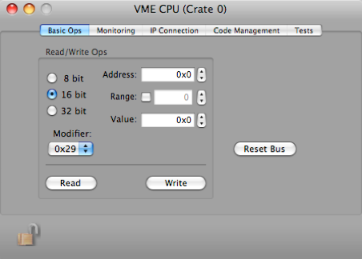
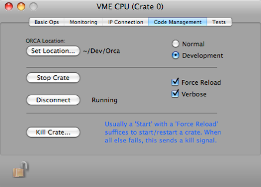
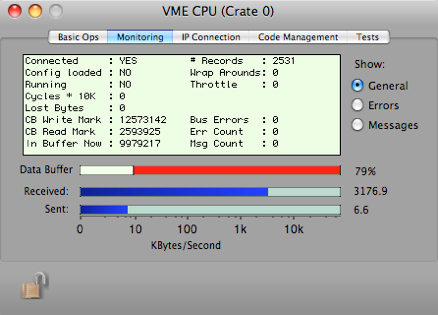
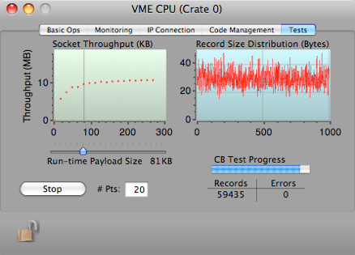

cPCI SBC

The SBC that supports cPCI access is a board from Acqiris. It is a dual Intel processor board running Linux.
This object can be placed only in a compact PCI crate.
If a connection can not be made and you know the IP address, username, and password are correct, the most likely source of the problem is that the SBC firewall is running. To turn it off ssh into the SBC as root and type:
service iptables stop
...you'll see a shutdown-like few lines of
doing something weird [OK]
doing something cryptic [OK]
and after that you should be able to connect.



These operations are not available for the cPCI SBC at this time.
The IP and port number of the SBC, as well as the user name and password. The port should always be the defaulted value.
Open the connection
When a connection is opened, all cards in the crate will be notified. If this option is selected, they will do a self initialization if they have been programmed to do so.
View of the data circular buffer.
A number of status values periodically returned from the SBC during data acquisition.
IP data rates shown as a debugging aid
Sends kill signal to the SBC code
Normally the SBC code is downloaded from the app bundle, but during development you can specify that the code is loaded from the source code tree. In that case, ORCA does not have to be re-linked to have new SBC code installed into the bundle.
Start the crate, downloading and compiling the SBC code if necessary. A connection will be established.
The Force Reload option will force new code into the SBC every time the Start Crate button is clicked. The Verbose option will print extra info to the status log as the SBC code is downloaded and compiled.
Select what to display in the info window
Slots to drop LAM objects



Results of the CB test, displayed are data for the socket transfer speeds of various payload packet sizes. The records transfered from the CB are randomly sized from 1 to 1000 Bytes in length.
Start/Stop the Circular Buffer tests and set the number of points to include. The points tested payload size packets that are spread evenly from 1 to 350 KB
Set the Payload size that will be used for normal running. The default size is 65KB
Test progress. Each record transfered is filled with a number sequence that is checked when the record is received. Mismatches are counted here also.